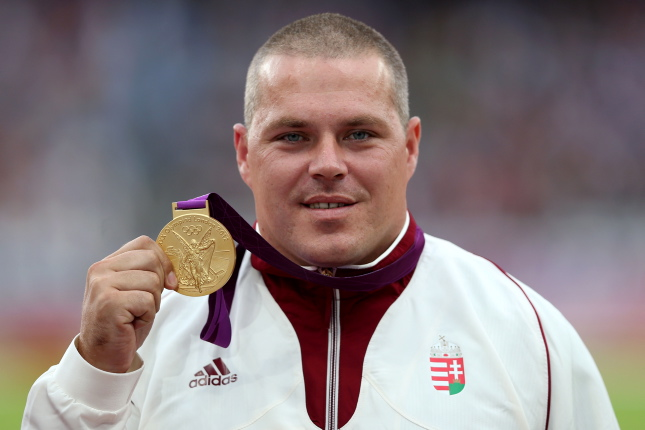

Pars Krisztián
kalapácsvető
Sportpályafutása
Pars Krisztián középiskolásként ismerkedett meg a kalapácsvetéssel. A szentgotthárdi fiú, a szintén innen származó Gécsek Tibor példája nyomán a Szombathelyi DOBÓ SE-ben kezdett el sportolni. Gécsek szlovén családból származik, hasonlóan Parsnak is vannak anyai ágról szlovén gyökerei. Edzője kezdetektől fogva a világhírű mesteredző, Németh Pál volt. 1999-ben, a lengyelországi Bydgoszczban 17 évesen ifjúsági világbajnokságot nyert. A 2000-es junior vb-t műtétje miatt hagyta ki. 2001 júniusában magyar junior rekordot dobott. Egy hónap múlva junior Európa-bajnokságot nyert Grosettóban. Ebben az évben, 2001 szeptemberében Szombathelyen a junior világcsúcsot is sikerült megjavítania 81,35 méteres dobásával. Ezt a rekordját 2006 júliusában tudta csak megjavítani az orosz Jevgenyij Ajdamirov. 2003-ban Bydgoszczban U23 Európa-bajnok lett.
2008 júliusában a szezon addigi legjobb eredményével győzött, majd 80 méteren felüli eredménnyel nyert Görögországban és az ob-n is. A pekingi olimpiára már éremesélyesként érkezett, és a selejtezőből egyedüliként 80 méter fölé jutva, a legjobb eredménnyel jutott a döntőbe. A döntőben azonban nem tudott akkorát javulni, mint ellenfelei, és 80,96 méteres eredményével a 4. helyet szerezte meg. A második helyen végzett fehérorosz Vadzim Dzevjatovszkit, illetve a szintén fehérorosz harmadik helyezett Ivan Cihant doppingvétség miatt kizárták, így úgy nézett ki, hogy ezüstérmet kap. 2010 júniusában a Nemzetközi Sportdöntőbíróság elfogadta a fehéroroszok fellebbezését, és nekik ítélte az érmeket. 2009 januárjában mestere, szinte második apja, Németh Pál váratlanul elhunyt. Edzéseinek irányítást a mesteredző fia, az 1999-es vb-ezüstérmes kalapácsvető, Németh Zsolt vette át. A 2009-es berlini vb-re esélyesként érkezett, addig minden versenyt megnyert, de Berlinben lecsúszva a dobogóról, a 4. helyen végzett. A 2010-es barcelonai Eb-n megszerezte élete első felnőtt nemzetközi érmét, egy bronzot. 2011 májusában teljesítette az olimpiai kiküldetési szintet. A tegui világbajnokságon kitűnő versenyzéssel, 81,18 méterrel végzett, hat centivel maradt el a győztes Murofusi Kódzsitól, így ezüstérmes lett. 2011 szeptemberében 81,89 métert dobott Szombathelyen, mellyel az év végi világranglista első helyén zárt.
2012 áprilisában 81,16 méteres dobással kezdte a versenyszezont Szombathelyen. Május végén Ostravában 82,28 métert ért el. Az Európa-bajnokságon első helyen jutott tovább a selejtezőből, és a fináléban magabiztosan nyert. A győzelemhez a leggyengébb érvényes kísérlete is elegendő lett volna. A londoni olimpiai játékokon a selejtezőből 79,37 méterrel első helyen került a döntőbe, majd ott 80,59 méteres dobással aranyérmet nyert.
Díjai, elismerései
- Magyar Köztársasági Bronz Érdemkereszt (2004)
- Az év magyar atlétája (2007, 2008, 2009, 2011, 2012, 2013)
- A Magyar Köztársasági Érdemrend lovagkeresztje (2008)
- Hazáért kitüntetés (2012)
- A Magyar Érdemrend tisztikeresztje (2012)
Felnőtt világversenyeken szerzett érmei
| Olimpiai játékok | |
|---|---|
| 2012, London | arany | Világbajnokság |
| 2011, Tegu | ezüst |
| 2013, Moszkva | ezüst | Európa bajnokság |
| 2010, Barcelona | bronz |
| 2012, Helsinki | arany |
| 2014, Zürich | arany |
A szöveg forrása: Wikipedia